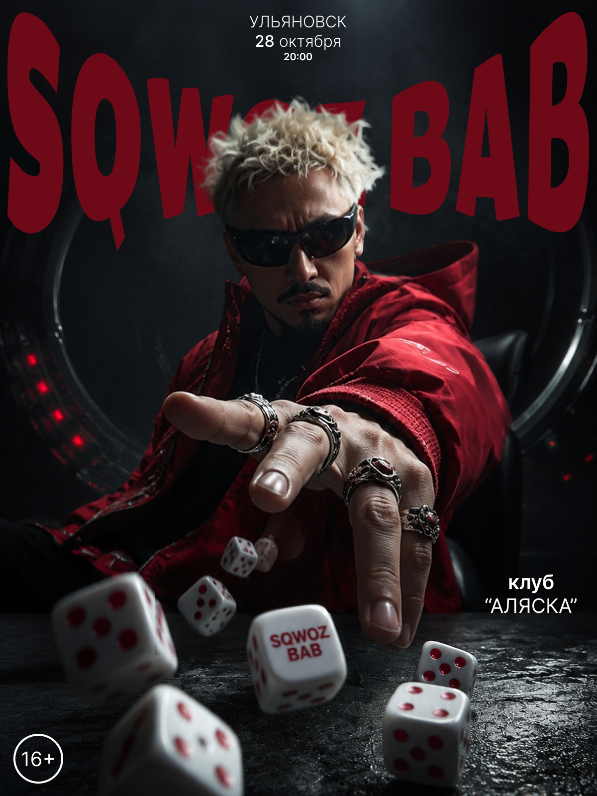
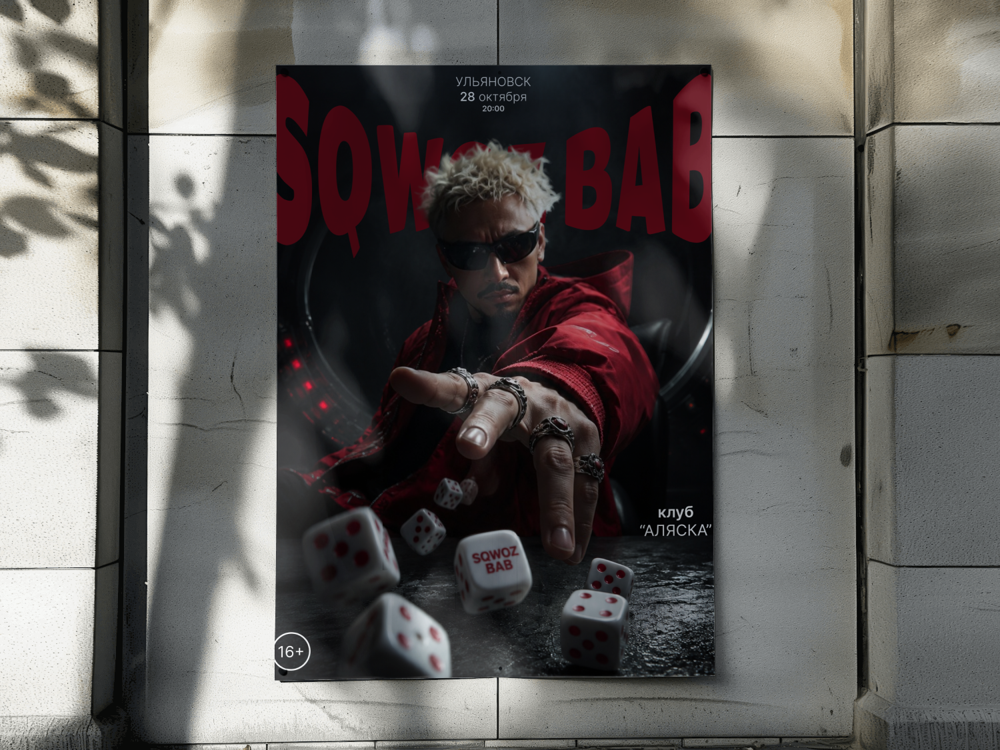
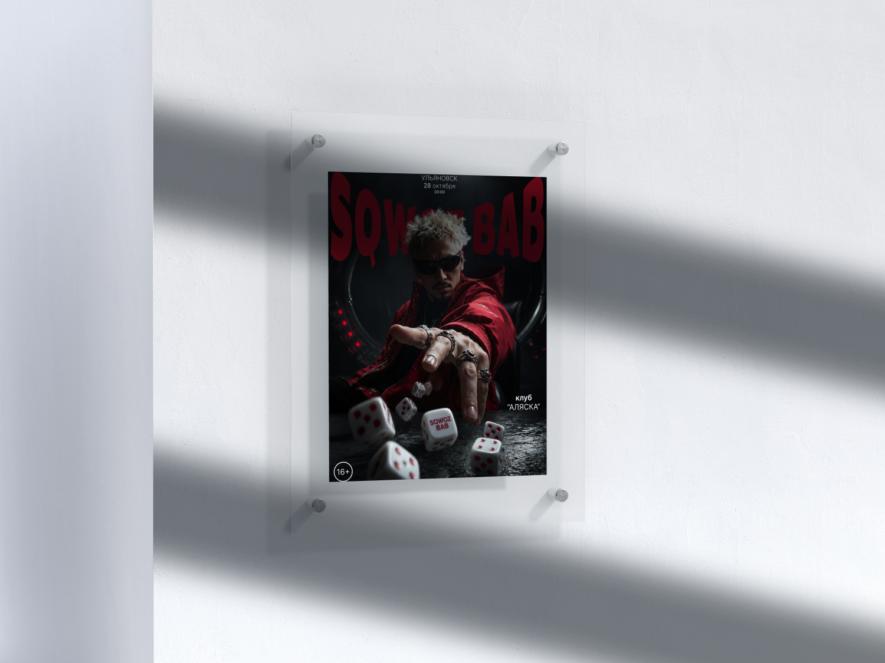
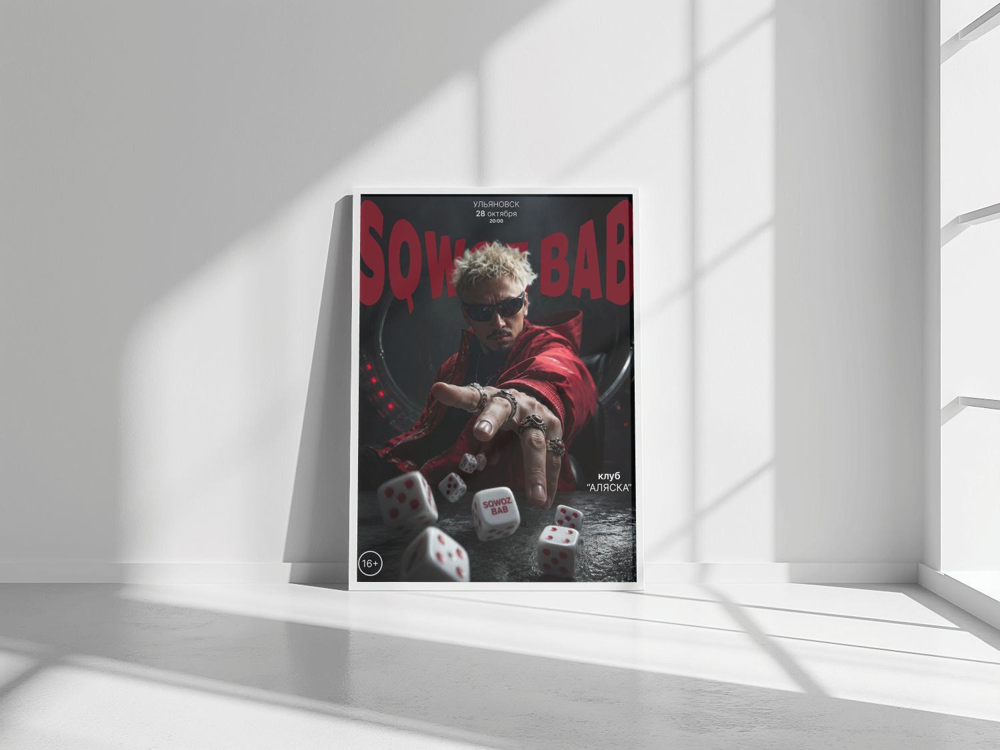

Sqwoz Bab
Афиша концерта Sqwoz Bab в клубе «Аляска» (Ульяновск) — драматичный портрет артиста в момент броска игральных костей.

- Клиент
- Клуб «Аляска», Ульяновск
- Задача
- Разработать афишу концерта артиста Sqwoz Bab для города Ульяновска: макет должен работать и как печатный постер для расклейки, и как цифровая афиша для соцсетей, удерживая фирменный тёмный, слегка мрачный образ артиста.
- Роль
- Графический дизайнер: концепция, композиция, леттеринг, ретушь и цветокоррекция портретной фотографии, подготовка макета под печать (уличный постер) и цифровые форматы.
Задачей было построить афишу вокруг одного сильного жеста, а не собирать композицию из разрозненных элементов — рука, тянущаяся к зрителю с летящими игральными костями, создаёт ощущение прямого вовлечения ещё до того, как прочитана дата и место. Тёмный почти монохромный фон с бликами красного превращает портрет в сцену из нуар-фильма, а не в стандартное промо-фото артиста.
Крупный неровный леттеринг «SQWOZ BAB», частично перекрытый фигурой артиста, работает как отдельный графический слой — буквы «прорастают» из-за спины, усиливая ощущение движения и агрессии образа. Информационный блок (город, дата, время, площадка) сведён к минимуму и вынесен в верхнюю часть, чтобы не спорить с главным визуальным акцентом — рукой с костями и надписью на самой кости с названием проекта.



Афиша легла в основу городской кампании концерта — использовалась как для наружной расклейки, так и в цифровом виде для анонса в соцсетях клуба.